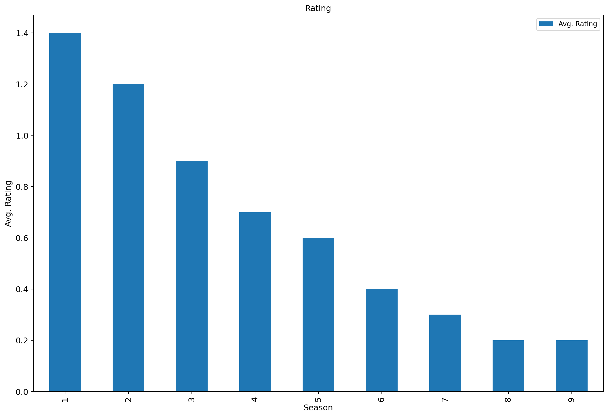
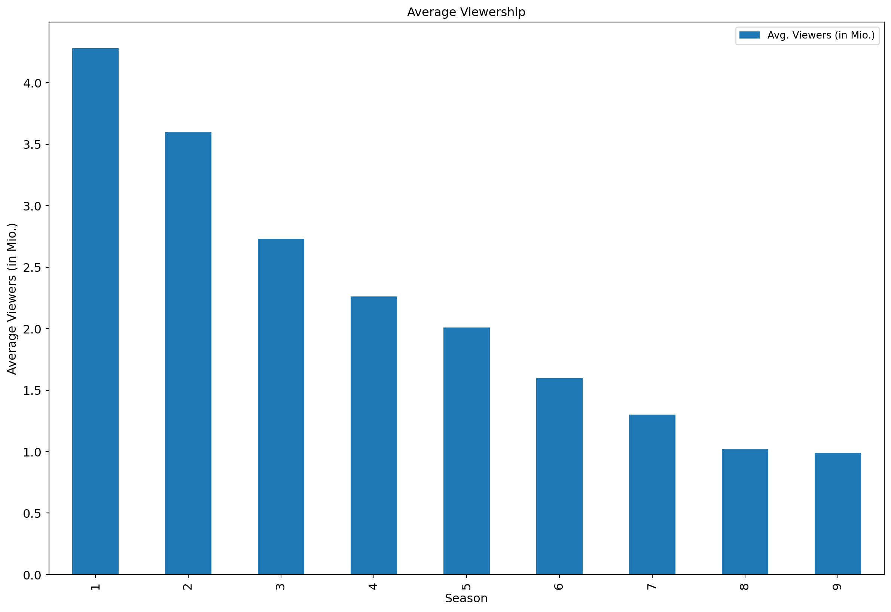

```{python}
import subprocess
import sys
def install(package):
subprocess.check_call([sys.executable, "-m", "pip", "install", package])
install("pandas")
install("matplotlib")
```Suits series analysis
Pick a TV show that had its premieres on TV and thus has some viewership numbers reported on Wikipedia. E.g. Suits (see table just above the References)
Then create a short report (you can copy the content from Wikipedia or other pages for this task) that contains, for example:
(do a commit after each step!)
- A brief description of the show (use italics for names).
- A photo with the logo or a shot from the show itself.
- A summary of some basic statistics (e.g. on viewership or ratings).
- A graph of the viewership over time.
- A graph of the episode-to-episode (or season-to-season) changes in viewership.
- A short description of the observed changes that includes inline references to numbers (e.g. the viewership decreased by
insert_calculated_numberbetween seasons 3 and 5). - Make sure your report looks nice -> this time we’re mostly interested in the output and not necessarily the codes used to achieve it.
renderyour report and save it in the relevant folder of your repo.- Commit the changes and push them to Github.
Suits is an American legal drama television series created and written by Aaron Korsh. It premiered on USA Network on June 23, 2011, produced by Universal Content Productions.
Logo taken from Wikipedia
Average Rating by season
```{python}
import pandas as pd
import matplotlib.pyplot as plt
# Load rating
rating = pd.read_csv('rating.csv')
# Create a bar plot
ax = rating[['Season', 'Avg. Rating']].plot(x='Season', kind='bar', title ="Rating", figsize=(15, 10), legend=True, fontsize=12)
# Set axis labels
ax.set_xlabel("Season", fontsize=12, rotation=360)
ax.set_ylabel("Avg. Rating", fontsize=12)
# Show the plot
plt.show()
# Flush plot data
plt.clf()
plt.cla()
plt.close()
```
Average Viewers (in Millions) by season
```{python}
# Viewership Over Time
import pandas as pd
import matplotlib.pyplot as plt
# Load reviews from a static csv file
viewers = pd.read_csv('viewers.csv')
# Create a bar plot
ax = viewers[['Season', 'Avg. Viewers (in Mio.)']].plot(x='Season', kind='bar', title ="Average Viewership", figsize=(15, 10), legend=True, fontsize=12)
# Set axis labels
ax.set_xlabel("Season", fontsize=12)
ax.set_ylabel("Average Viewers (in Mio.)", fontsize=12)
# Show the plot
plt.show()
```
In both cases (Rating and Viewership) we can observe significant trend with each new season. The biggest decrease can be observed between 2nd and 3rd season. Last season viewership decreased approximately 4 times with respect to the initial season.